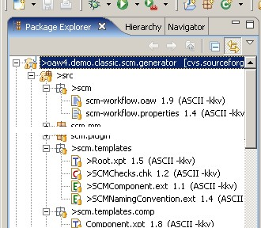

This document describes the various functionalities that the openArchitectureWare plugins contribute to the Eclipse installation. It is intended as user instruction for the work with Eclipse. You need to read other documentation to understand the openArchitectureWare framework itself.
It is assumed that you already have installed the oAW core and the oAW plugin feature from the update site as described in the Installation documentation.
There are some more Eclipse plugins available that belong to special subprojects, such as the Recipe framework. They are not subject of this document and will be described in its specific documentation.
The openArchitectureWare core plugins provide editors for the different languages and a launch shortcut to start workflow files. Let us first have a look at the different oAW specific files.
When you open Eclipse and import a project into the workspace you can see several file decorating images.
There are specific images for
|  |
When you double-click on one of the above mentioned file types, special editors will open that provide appropriate syntax coloring.
Here are examples for the Xpand editor:
for the Extensions editor:
and for Check editor:
The Editors provide extensive code completion support by pressing
Ctrl + Space similar to what is known from the Java
editor. Available types, properties, and operation, as well as
extensions from .ext files will be found. The
Xpand editor provides additionally support for the
Xpand language statements.
The openArchitectureWare framework version 4 supports several types of meta-metamodels.
From older versions, the classic UML metamodels may be known. Currently also JavaBeans metamodels and EMF based metamodels are supported out of the box.
Additional metamodel contributors can be registered through an extension point.
The editors need to know with what kind of metamodels you are working. Therefore, one can configure the metamodel contributors on workspace and on project level.
If you work always with the same type of metamodels, you can specify the metamodel contributors in the global preference page. It is available under Windows --> Preferences in the openArchitectureWare section.
You have seen in the last screenshot that you can switch the openArchitectureWare nature on. If you do so, you enable analyzer support for all oAW specific file types in that project.
During the build process, all found problems are marked in the editors as well as listed in the Problems view.
In the current implementation analyzes take place when Eclipse runs an incremental or full build. That means, problem markers are actualized when a file is saved, for instance. If you are in doubt about the actuality of problem markers, you should clean your project and let it rebuild again.
Note that if you change signatures of e.g. extensions the referencing artifacts (Xpand templates, etc.) are not analyzed automatically.